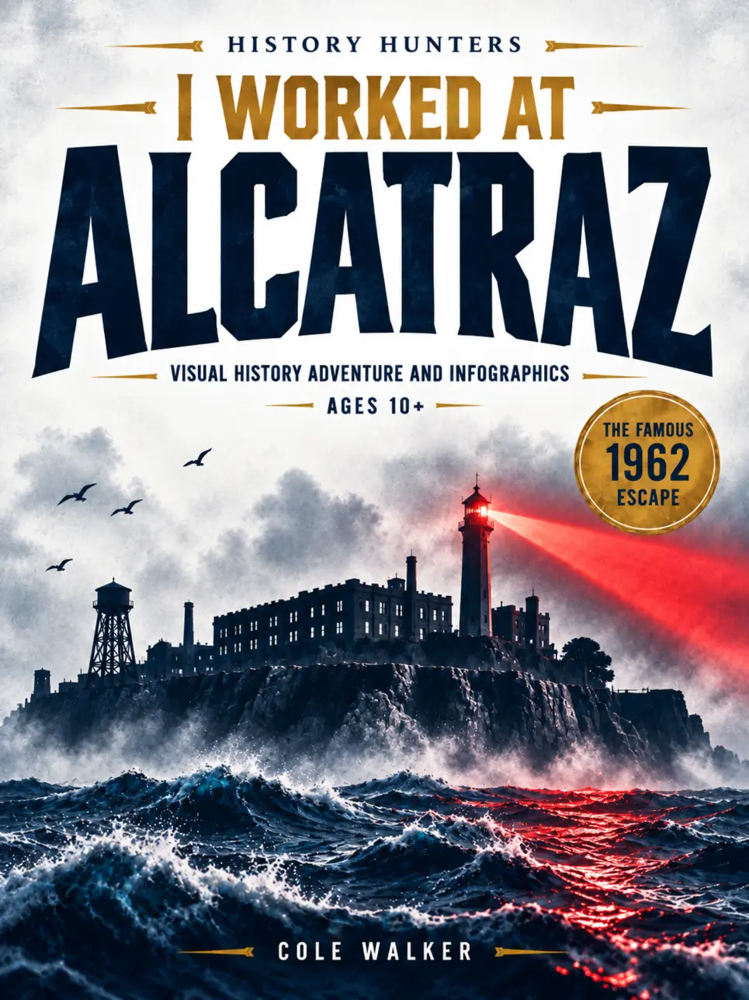
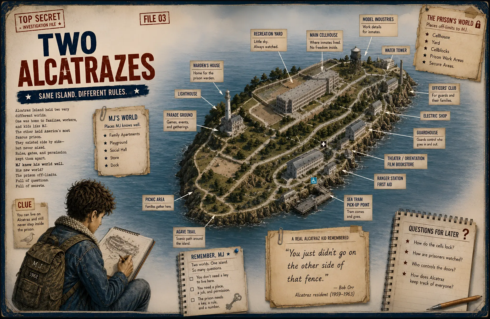
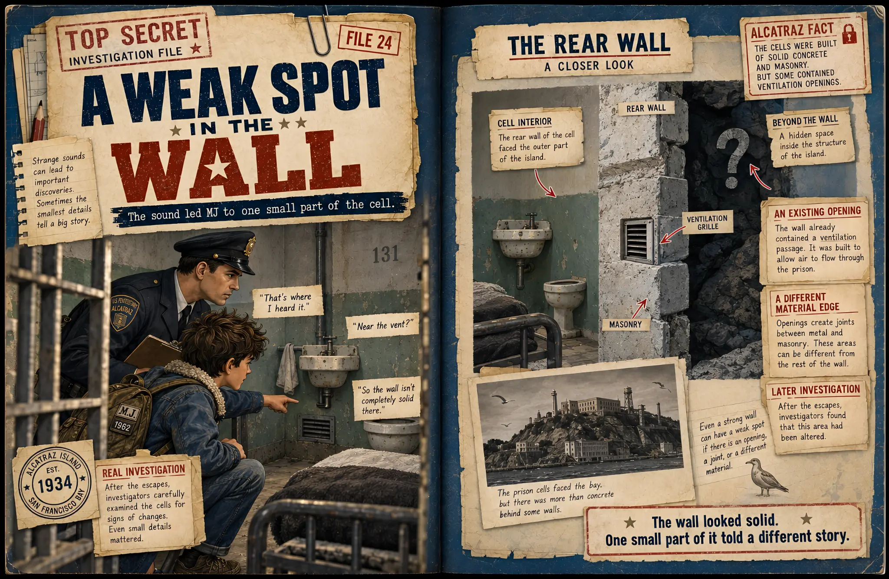

Make the prison legible.
Maps, cutaways and visual routines reveal the cells, guard patterns, service spaces and security layers that made Alcatraz work.
History Hunters · Book Four · Ages 10+
Understand the prison.
Follow the clues.
A visual history adventure inside America’s most famous prison—from daily routines and hidden spaces to the 1962 escape that became an unsolved mystery.
1962Reconstruct the famous escape, examine the evidence and decide what you think happened.

Move to explore · Click to investigateSee inside the book
Use the arrows, swipe or chapter markers to explore four real interior spreads from the investigation.

Why readers keep investigating
This is visual nonfiction for readers who want true stories to feel like an investigation, not homework.
Maps, cutaways and visual routines reveal the cells, guard patterns, service spaces and security layers that made Alcatraz work.
Track Frank Morris and brothers John and Clarence Anglin as clues become a plan—and a plan becomes one of history’s great mysteries.
Separate the known history from the open questions with theories, evidence and a clear, non-graphic visual narrative.

Built for curious readers ages 10+
Every spread turns a difficult question into something you can see, compare and remember—without losing the uncertainty that makes the story so compelling.
Reader reviews
Short reactions from curious readers, parents and teachers who like their history with a little mystery.
“My 10-year-old was completely hooked. He kept going back to the map and explaining the route to us like he was solving the case himself.”
“Really well done. The cutaways made the prison easy to picture.”
“I bought it for the escape story, but the everyday prison details were what he talked about at dinner. A little dense in places—in a good way.”
“The illustrations are excellent and the mystery is handled without pretending we know more than the evidence.”
“Great for a curious kid who asks a million questions. We read it together over a weekend.”
Book details
A premium visual history adventure for readers who love true stories, mysteries, maps and how-things-work books.
Yes. The prison, its systems, the 1962 escape and the historical evidence are real. MJ is a fictional 12-year-old island resident who gives readers a way into the investigation.
No. It is historically grounded and non-graphic, with the focus on systems, maps, clues, prison life and visual explanation.
The route, preparation and evidence can be reconstructed, but what happened after the men reached the bay remains an open historical mystery.
Yes. It is Book Four in History Hunters, alongside Pompeii, Hindenburg and Abraham Lincoln.
The History Hunters case file
Understand the prison, follow the clues and decide where the evidence leads you.
View on Amazon ↗